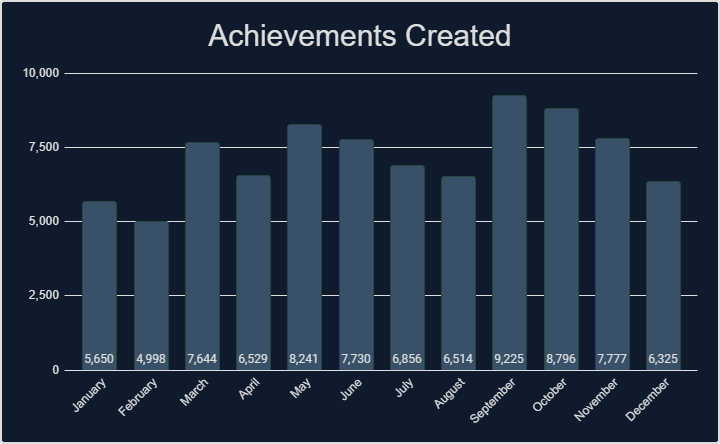
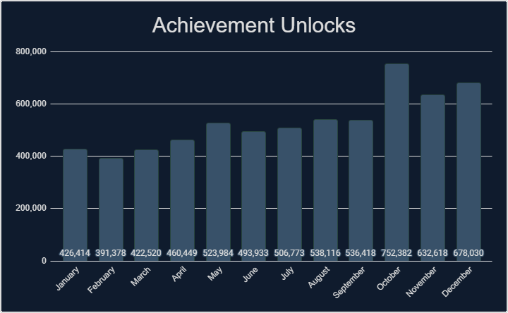
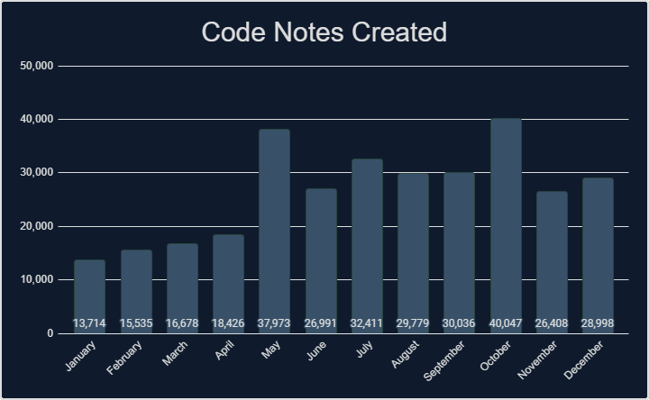
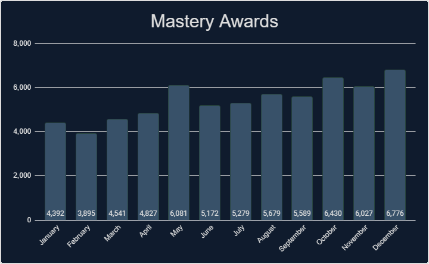
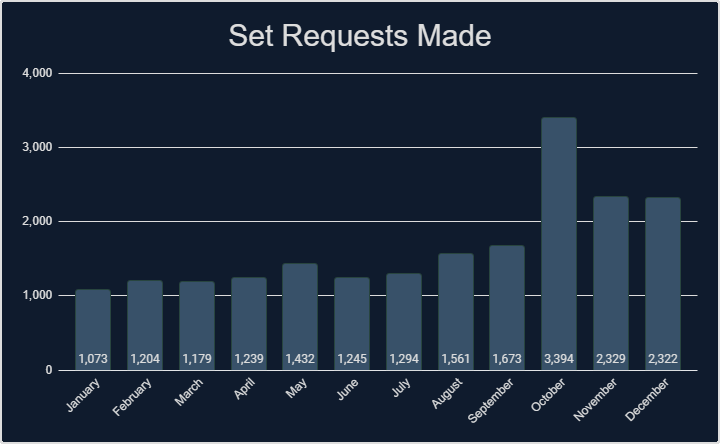
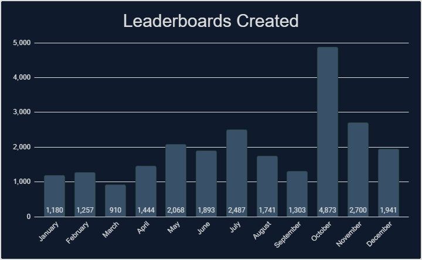

Intro
If you like looking at stats and data, then you have come to the right place. We’ve gathered tons of stats from 2022 that cover a wide range of measurable aspects that RetroAchievements offer. Check out what the community has accomplished.
General Stats
Check out some general stats from this year.
| Number of sets released. |
1,431 |
| Number of achievements released. |
80,559 |
| Number of hardcore achievements earned. |
6,363,015 |
| Number of code notes created. |
306,018 |
| Number of mastery awards awarded. |
64,688 |
| Number of set requests made. |
19,945 |
| Number of leaderboards created. |
22,910 |
| Number of leaderboard entries submitted. |
650,075 |
| Number of users who have earned at least 1 hardcore achievement. |
44,604 |
| Number of total hardcore points earned by players. |
42,622,890 |
| Number of total hardcore retro points earned by players. |
108,362,622 |
| Number of user accounts created. |
117,651 |
| Number of new user accounts reaching >=500 points. |
4,360 |
Achievements Created
Monthly Breakdown

Console Breakdown
| Console | Achievements |
|---|
| 32X | 94 |
| 3DO Interactive Multiplayer | 288 |
| Amstrad CPC | 1,063 |
| Apple II | 182 |
| Arcade | 2,445 |
| Arduboy | 852 |
| Atari 2600 | 241 |
| Atari 7800 | 94 |
| Atari Jaguar | 275 |
| Atari Lynx | 297 |
| ColecoVision | 89 |
| Dreamcast | 4,499 |
| Events | 280 |
| Fairchild Channel F | 240 |
| Game Boy | 1,667 |
| Game Boy Advance | 3,650 |
| Game Boy Color | 2,451 |
| Game Gear | 565 |
| Intellivision | 49 |
| Magnavox Odyssey 2 | 67 |
| Master System | 440 |
| Mega Drive | 2,229 |
| Console | Achievements |
|---|
| Mega Duck | 581 |
| MSX | 299 |
| Neo Geo Pocket | 479 |
| NES | 4,524 |
| Nintendo 64 | 2,323 |
| Nintendo DS | 7,069 |
| PC Engine | 369 |
| PC Engine CD | 462 |
| PC-8000/8800 | 155 |
| PC-FX | 168 |
| PlayStation | 7,490 |
| PlayStation 2 | 18,134 |
| PlayStation Portable | 7,869 |
| Pokemon Mini | 119 |
| Saturn | 1,399 |
| Sega CD | 482 |
| SG-1000 | 38 |
| SNES | 5,150 |
| Vectrex | 121 |
| Virtual Boy | 365 |
| WASM-4 | 400 |
| Watara Supervision | 41 |
| WonderSwan | 665 |
Top 25 Achievement Creators
Check out the top 25 achievement creators this year, how many achievements they created and what console they created the most achievements for.
| Rank |
Developer |
Achievements |
Favorite Console |
| 1 |
 Snow Snow |
2,820 |
PlayStation 2 |
| 2 |
 voiceofautumn voiceofautumn |
2,754 |
Game Boy Advance |
| 3 |
 wolfman2000 wolfman2000 |
2,623 |
PlayStation 2 |
| 4 |
 Cadaxar Cadaxar |
2,087 |
SNES |
| 5 |
 TeddyWestside TeddyWestside |
1,964 |
PlayStation 2 |
| 6 |
 pinguupinguu pinguupinguu |
1,927 |
Nintendo DS |
| 7 |
 AlexGatao AlexGatao |
1,899 |
PlayStation 2 |
| 8 |
 timenoe timenoe |
1,881 |
PlayStation 2 |
| 9 |
 ladynadiad ladynadiad |
1,545 |
PlayStation Portable |
| 10 |
 zxmega zxmega |
1,514 |
PlayStation 2 |
| 11 |
 Bryan1150 Bryan1150 |
1,461 |
Nintendo DS |
| 12 |
 MGNS8M MGNS8M |
1,368 |
Dreamcast |
| 13 |
 blendedsea blendedsea |
1,302 |
PlayStation 2 |
| 14 |
 GalacticSpear GalacticSpear |
1,237 |
PlayStation Portable |
| 15 |
 TheMysticalOne TheMysticalOne |
1,197 |
PlayStation 2 |
| 16 |
 WanderingHeiho WanderingHeiho |
1,186 |
PlayStation Portable |
| 17 |
 raniejogos raniejogos |
1,183 |
PlayStation Portable |
| 18 |
 SporyTike SporyTike |
1,142 |
Nintendo DS |
| 19 |
 lordpsycho lordpsycho |
1,110 |
PlayStation Portable |
| 20 |
 gollawiz gollawiz |
1,088 |
PlayStation 2 |
| 21 |
 Excessiveiser Excessiveiser |
1,049 |
PlayStation 2 |
| 22 |
 suXin suXin |
1,029 |
PlayStation 2 |
| 23 |
 EulerMoises1981 EulerMoises1981 |
967 |
NES |
| 24 |
 televandalist televandalist |
953 |
PlayStation 2 |
| 25 |
 Brandovsky Brandovsky |
943 |
Game Boy Color |
Top 25 Developers
Check out some stats regarding unlocks and points awarded by the developers. Included is the number of unlocks, points and retro points awarded to the players. This data includes all achievements but only counts unlocks during 2022.
| Rank |
Developer |
Unlocks Awarded |
Points Awarded |
Retro Points Awarded |
| 1 |
GalacticSpear |
166,098 |
1,299,257 |
4,904,083 |
| 2 |
 Brian Brian |
162,434 |
1,194,920 |
3,212,916 |
| 3 |
SporyTike |
157,540 |
918,319 |
2,130,970 |
| 4 |
 Salsa Salsa |
154,942 |
1,184,863 |
3,738,298 |
| 5 |
televandalist |
145,240 |
1,091,797 |
2,881,875 |
| 6 |
Snow |
136,332 |
756,638 |
1,897,222 |
| 7 |
 dude1286 dude1286 |
133,964 |
1,099,601 |
2,120,280 |
| 8 |
 stfN1337 stfN1337 |
107,308 |
799,824 |
1,236,598 |
| 9 |
 Blazekickn Blazekickn |
99,705 |
545,892 |
1,859,124 |
| 10 |
 Scott Scott |
96,522 |
504,579 |
1,019,840 |
| 11 |
 Dexterspet Dexterspet |
92,834 |
580,098 |
1,301,312 |
| 12 |
MGNS8M |
90,791 |
609,022 |
1,703,714 |
| 13 |
zxmega |
90,462 |
633,454 |
1,606,782 |
| 14 |
blendedsea |
88,240 |
477,198 |
1,191,610 |
| 15 |
TeddyWestside |
86,315 |
558,429 |
1,347,735 |
| 16 |
 wilhitewarrior wilhitewarrior |
84,505 |
612,003 |
2,245,730 |
| 17 |
 Jaarl Jaarl |
82,367 |
584,487 |
1,250,368 |
| 18 |
voiceofautumn |
80,976 |
443,981 |
1,085,805 |
| 19 |
 jplima jplima |
80,215 |
754,268 |
1,868,018 |
| 20 |
 Delmaru Delmaru |
78,493 |
486,283 |
1,088,861 |
| 21 |
 Altomar Altomar |
75,077 |
477,131 |
1,007,036 |
| 22 |
 BrunoKiko BrunoKiko |
72,700 |
422,947 |
750,035 |
| 23 |
 Rewsifer Rewsifer |
70,377 |
356,166 |
589,376 |
| 24 |
 Totaya Totaya |
68,412 |
569,539 |
1,084,320 |
| 25 |
 Shmelyoff Shmelyoff |
64,683 |
460,669 |
2,006,530 |
* Hardcore only
Achievement Unlocks
Monthly Breakdown

Console Breakdown
| Console | Unlocks |
|---|
| 32X | 5,614 |
| 3DO Interactive Multiplayer | 8,127 |
| Amstrad CPC | 7,027 |
| Apple II | 4,723 |
| Arcade | 178,343 |
| Arduboy | 19,839 |
| Atari 2600 | 74,182 |
| Atari 7800 | 5,023 |
| Atari Jaguar | 2,770 |
| Atari Lynx | 3,846 |
| ColecoVision | 2,715 |
| Dreamcast | 127,536 |
| Events | 7,814 |
| Fairchild Channel F | 6,017 |
| Game Boy | 316,675 |
| Game Boy Advance | 622,695 |
| Game Boy Color | 196,783 |
| Game Gear | 30,765 |
| Intellivision | 2,681 |
| Magnavox Odyssey 2 | 2,021 |
| Master System | 58,998 |
| Mega Drive | 367,342 |
| Console | Unlocks |
|---|
| Mega Duck | 4,350 |
| MSX | 5,452 |
| Neo Geo Pocket | 9,715 |
| NES | 771,001 |
| Nintendo 64 | 357,223 |
| Nintendo DS | 259,312 |
| PC Engine | 60,173 |
| PC Engine CD | 17,217 |
| PC-8000/8800 | 4,216 |
| PC-FX | 1,383 |
| PlayStation | 981,065 |
| PlayStation 2 | 463,966 |
| PlayStation Portable | 197,808 |
| Pokemon Mini | 16,876 |
| Saturn | 37,472 |
| Sega CD | 22,389 |
| SG-1000 | 3,177 |
| SNES | 1,058,145 |
| Vectrex | 2,262 |
| Virtual Boy | 9,739 |
| WASM-4 | 11,520 |
| Watara Supervision | 6,381 |
| WonderSwan | 10,637 |
Top 25 Users
Check out who has the most achievement unlocks, points, retro points, and mastery awards earned this year.
| Rank |
User |
Achievements |
Points |
Retro Points |
Mastery Awards |
| 1 |
 donutweegee donutweegee |
17,815 |
183,720 |
518,178 |
297 |
| 2 |
 AuburnRDM AuburnRDM |
17,355 |
132,080 |
302,219 |
549 |
| 3 |
 Kinglink Kinglink |
13,324 |
59,220 |
88,535 |
90 |
| 4 |
 Lonoke31 Lonoke31 |
12,469 |
75,393 |
129,609 |
349 |
| 5 |
 Infernum Infernum |
10,956 |
91,772 |
250,375 |
452 |
| 6 |
 Orph Orph |
10,362 |
69,977 |
154,637 |
181 |
| 7 |
 Vyach59 Vyach59 |
10,155 |
72,571 |
168,361 |
172 |
| 8 |
 guineu guineu |
9,982 |
78,084 |
233,492 |
432 |
| 9 |
 Grahamtams Grahamtams |
9,740 |
72,305 |
190,227 |
100 |
| 10 |
 NEOMAR NEOMAR |
9,135 |
64,476 |
144,308 |
371 |
| 11 |
 YamatoVergil YamatoVergil |
9,119 |
93,134 |
239,518 |
159 |
| 12 |
 MaxMilyin MaxMilyin |
8,647 |
68,351 |
181,667 |
125 |
| 13 |
 Amir96lx Amir96lx |
8,611 |
65,025 |
234,023 |
155 |
| 14 |
 Olafur Olafur |
8,490 |
57,902 |
155,459 |
215 |
| 15 |
 BrothersGames BrothersGames |
8,345 |
62,585 |
148,436 |
199 |
| 16 |
 Retrokaiser Retrokaiser |
8,339 |
43,805 |
78,036 |
178 |
| 17 |
 xTyrea64 xTyrea64 |
7,989 |
63,224 |
167,257 |
110 |
| 18 |
 ChronoGear ChronoGear |
7,880 |
71,508 |
335,416 |
174 |
| 19 |
 Rafaelsssss Rafaelsssss |
7,858 |
67,667 |
211,543 |
159 |
| 20 |
 CobaltZeroni CobaltZeroni |
7,612 |
41,753 |
75,795 |
83 |
| 21 |
 soltyd soltyd |
7,602 |
62,327 |
196,721 |
87 |
| 22 |
 bizarf bizarf |
7,507 |
45,536 |
78,437 |
78 |
| 23 |
 ShadwSonic ShadwSonic |
7,422 |
52,749 |
158,899 |
270 |
| 24 |
 pitapocket17 pitapocket17 |
7,267 |
53,412 |
142,703 |
194 |
| 25 |
 Andrey199650 Andrey199650 |
7,169 |
56,919 |
164,037 |
147 |
Top 25 Awarded Achievements
Check out which achievements were earned the most this year.
| Rank |
Achievement |
Game |
Times Awarded |
| 1 |
 Giddy Up! Giddy Up! |
 Super Mario World (SNES) Super Mario World (SNES) |
4,891 |
| 2 |
 Unleash The Dragon Unleash The Dragon |
Super Mario World (SNES) |
4,498 |
| 3 |
 I is for Icky Iggy I is for Icky Iggy |
Super Mario World (SNES) |
3,429 |
| 4 |
 Shroooooms… Shroooooms… |
 Super Mario Bros. (NES) Super Mario Bros. (NES) |
3,350 |
| 5 |
 I Believe I Can Fly I Believe I Can Fly |
Super Mario World (SNES) |
3,258 |
| 6 |
 You Can Spell! You Can Spell! |
 Donkey Kong Country (SNES) Donkey Kong Country (SNES) |
2,904 |
| 7 |
 Now You’re Playing With Fire! Now You’re Playing With Fire! |
Super Mario Bros. (NES) |
2,855 |
| 8 |
 A new Journey A new Journey |
 Super Mario 64 (Nintendo 64) Super Mario 64 (Nintendo 64) |
2,836 |
| 9 |
 Amateur Collector Amateur Collector |
 Sonic the Hedgehog (Mega Drive) Sonic the Hedgehog (Mega Drive) |
2,826 |
| 10 |
 That Was Easy That Was Easy |
Sonic the Hedgehog (Mega Drive) |
2,636 |
| 11 |
 Tally Me Bananas Tally Me Bananas |
Donkey Kong Country (SNES) |
2,626 |
| 12 |
 Top of the Flagpole Top of the Flagpole |
Super Mario Bros. (NES) |
2,405 |
| 13 |
 What Are You Doing Up There? What Are You Doing Up There? |
Super Mario Bros. (NES) |
2,319 |
| 14 |
 I’m a Super Star! I’m a Super Star! |
Super Mario Bros. (NES) |
2,226 |
| 15 |
 Celebrate in Style Celebrate in Style |
Super Mario Bros. (NES) |
2,205 |
| 16 |
 What is a Man? What is a Man? |
 Castlevania: Symphony of the Night (PlayStation) Castlevania: Symphony of the Night (PlayStation) |
2,156 |
| 17 |
 I Know a Shortcut! I Know a Shortcut! |
Super Mario Bros. (NES) |
2,142 |
| 18 |
 Illuminating Illuminating |
 Legend of Zelda, The: A Link to the Past (SNES) Legend of Zelda, The: A Link to the Past (SNES) |
2,098 |
| 19 |
 Prepare For Take-Off Prepare For Take-Off |
 Super Mario Bros. 3 (NES) Super Mario Bros. 3 (NES) |
2,088 |
| 20 |
 If I Were A Rich Man If I Were A Rich Man |
Super Mario Bros. (NES) |
2,041 |
| 21 |
 Morton Enough Morton Enough |
Super Mario World (SNES) |
1,998 |
| 22 |
 Another Kind of Flying Another Kind of Flying |
Super Mario World (SNES) |
1,908 |
| 23 |
 Fighter Fighter |
Legend of Zelda, The: A Link to the Past (SNES) |
1,883 |
| 24 |
 1-UP 1-UP |
Super Mario Bros. (NES) |
1,865 |
| 25 |
 Rutabaga! Rutabaga! |
 Crash Bandicoot (PlayStation) Crash Bandicoot (PlayStation) |
1,801 |
* Hardcore only
Code Notes
Monthly Breakdown

Console Breakdown
| Console | Notes |
|---|
| 32X | 149 |
| 3DO Interactive Multiplayer | 480 |
| Amstrad CPC | 1,881 |
| Apple II | 592 |
| Arcade | 4,560 |
| Arduboy | 1,271 |
| Atari 2600 | 357 |
| Atari 7800 | 306 |
| Atari Jaguar | 268 |
| Atari Lynx | 136 |
| ColecoVision | 273 |
| Dreamcast | 13,347 |
| Events | 2 |
| Fairchild Channel F | 339 |
| Game Boy | 3,577 |
| Game Boy Advance | 16,135 |
| Game Boy Color | 6,681 |
| Game Gear | 1,446 |
| Hubs | 38 |
| Intellivision | 94 |
| Magnavox Odyssey 2 | 85 |
| Master System | 1,011 |
| Mega Drive | 4,960 |
| Console | Notes |
|---|
| Mega Duck | 544 |
| MSX | 508 |
| Neo Geo Pocket | 1,235 |
| NES | 18,837 |
| Nintendo 64 | 4,843 |
| Nintendo DS | 27,259 |
| PC Engine | 792 |
| PC Engine CD | 610 |
| PC-8000/8800 | 234 |
| PC-FX | 518 |
| PlayStation | 27,369 |
| PlayStation 2 | 118,737 |
| PlayStation Portable | 33,520 |
| Pokemon Mini | 153 |
| Saturn | 6,449 |
| Sega CD | 1,399 |
| SG-1000 | 82 |
| SNES | 12,463 |
| TIC-80 | 1 |
| Vectrex | 213 |
| Virtual Boy | 555 |
| WASM-4 | 744 |
| Watara Supervision | 23 |
| WonderSwan | 1,878 |
Top 10 Code Note Creators
Check out which developers created the most code notes this year.
Mastery Awards
Monthly Breakdown

Console Breakdown
| Console | Awards |
|---|
| 32X | 121 |
| 3DO Interactive Multiplayer | 194 |
| Amstrad CPC | 143 |
| Apple II | 155 |
| Arcade | 1,333 |
| Arduboy | 1,110 |
| Atari 2600 | 2,531 |
| Atari 7800 | 90 |
| Atari Jaguar | 46 |
| Atari Lynx | 70 |
| ColecoVision | 151 |
| Dreamcast | 766 |
| Events | 808 |
| Fairchild Channel F | 558 |
| Game Boy | 4,842 |
| Game Boy Advance | 5,407 |
| Game Boy Color | 2,600 |
| Game Gear | 499 |
| Intellivision | 140 |
| Magnavox Odyssey 2 | 127 |
| Master System | 673 |
| Mega Drive | 4,141 |
| Console | Awards |
|---|
| Mega Duck | 105 |
| MSX | 136 |
| Neo Geo Pocket | 147 |
| NES | 8,383 |
| Nintendo 64 | 3,015 |
| Nintendo DS | 2,029 |
| PC Engine | 330 |
| PC Engine CD | 95 |
| PC-8000/8800 | 95 |
| PC-FX | 64 |
| PlayStation | 6,073 |
| PlayStation 2 | 3,002 |
| PlayStation Portable | 1,015 |
| Pokemon Mini | 1,379 |
| Saturn | 273 |
| Sega CD | 248 |
| SG-1000 | 85 |
| SNES | 9,966 |
| Vectrex | 100 |
| Virtual Boy | 249 |
| WASM-4 | 934 |
| Watara Supervision | 346 |
| WonderSwan | 114 |
Top 25 Mastery Awards
Top 10 Single Month Masteries
Check out which users had the most single month mastery awards this year.
Top 25 Mastered Sets
Check out which sets were mastered most this year.
Set Requests
Monthly Breakdown

Console Breakdown
| Console | Requests |
|---|
| 32X | 28 |
| 3DO Interactive Multiplayer | 46 |
| Amiga | 11 |
| Amstrad CPC | 21 |
| Apple II | 42 |
| Arcade | 758 |
| Arduboy | 3 |
| Atari 2600 | 36 |
| Atari 5200 | 1 |
| Atari 7800 | 9 |
| Atari Jaguar | 13 |
| ColecoVision | 6 |
| Dreamcast | 945 |
| Fairchild Channel F | 2 |
| Game Boy | 188 |
| Game Boy Advance | 841 |
| Game Boy Color | 227 |
| Game Gear | 76 |
| Intellivision | 12 |
| Magnavox Odyssey 2 | 4 |
| Master System | 169 |
| Mega Drive | 546 |
| Mega Duck | 3 |
| Console | Requests |
|---|
| MSX | 29 |
| Neo Geo CD | 2 |
| Neo Geo Pocket | 15 |
| NES | 714 |
| Nintendo 64 | 645 |
| Nintendo DS | 1,529 |
| PC Engine | 52 |
| PC Engine CD | 81 |
| PC-8000/8800 | 13 |
| PC-FX | 2 |
| PlayStation | 2,756 |
| PlayStation 2 | 5,877 |
| PlayStation Portable | 1,800 |
| Pokemon Mini | 2 |
| Saturn | 281 |
| Sega CD | 126 |
| SG-1000 | 4 |
| SNES | 1,314 |
| Super Cassette Vision | 1 |
| Virtual Boy | 7 |
| WASM-4 | 2 |
| WonderSwan | 28 |
| ZX Spectrum | 6 |
Leaderboards
Monthly Breakdown

Console Breakdown
| Console | Leaderboards |
|---|
| 32X | 80 |
| 3DO Interactive Multiplayer | 181 |
| Amstrad CPC | 80 |
| Apple II | 14 |
| Arcade | 307 |
| Arduboy | 142 |
| Atari 2600 | 47 |
| Atari 7800 | 22 |
| Atari Jaguar | 14 |
| Atari Lynx | 10 |
| ColecoVision | 25 |
| Dreamcast | 1,390 |
| Fairchild Channel F | 20 |
| Game Boy | 579 |
| Game Boy Advance | 705 |
| Game Boy Color | 762 |
| Game Gear | 341 |
| GameCube | 1 |
| Intellivision | 15 |
| Magnavox Odyssey 2 | 16 |
| Master System | 84 |
| Mega Drive | 783 |
| Console | Leaderboards |
|---|
| Mega Duck | 156 |
| MSX | 67 |
| Neo Geo Pocket | 4 |
| NES | 674 |
| Nintendo 64 | 750 |
| Nintendo DS | 2,372 |
| PC Engine | 26 |
| PC Engine CD | 67 |
| PC-8000/8800 | 7 |
| PC-FX | 13 |
| PlayStation | 4,145 |
| PlayStation 2 | 7,139 |
| PlayStation Portable | 1,517 |
| Pokemon Mini | 18 |
| Saturn | 250 |
| Sega CD | 3 |
| SG-1000 | 49 |
| SNES | 590 |
| Vectrex | 15 |
| Virtual Boy | 57 |
| WASM-4 | 51 |
| Watara Supervision | 2 |
| WonderSwan | 207 |
Top 10 Leaderboard Creators
Check out which developers created the most leaderboards this year.
 By
MrOwnership
By
MrOwnership
 Bedtime
Bedtime suspect15
suspect15 Bendyhuman
Bendyhuman NickGoat1990
NickGoat1990 Jungon
Jungon AllKindsOfJames
AllKindsOfJames MaddieKittyTV
MaddieKittyTV VectorPrime40
VectorPrime40 CerinianShadowGaming
CerinianShadowGaming Beulu79
Beulu79 NeowaveBR
NeowaveBR roukanumachi
roukanumachi mudrik
mudrik


 PsyHunter29
PsyHunter29 Anic
Anic